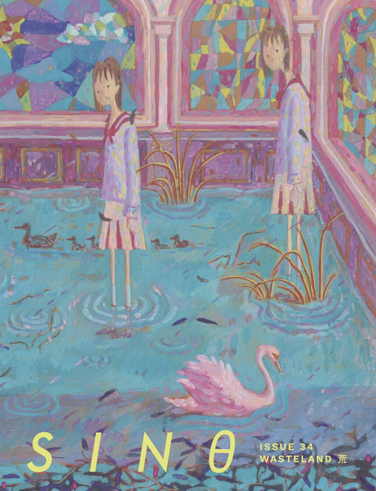

ORDER SINθ #34 NOW
A single plastic bag drifts aimlessly toward the horizon. Not a soul in sight. The smell of rust and decay wafts through the air. Dust clings to your shoes as you make your way through the debris. For sinθ #34 “WASTELAND 荒”, we call you to explore the complexities of our relationship with nature. Wade through ruins of the past and present, across new art, writing, and conversations. Contemplate what the future will or should look like.
In the issue:
- Senior Editor Yue Chen chats with Madeleine Thien about Thien’s forthcoming novel The Book of Records and cultural histories, memories, and the artist’s responsibility to protest.
- Editor-in-chief Jiaqi Kang sits down with Chinese Artists and Organizers (CAO) Collective 离离草 co-directors huiyin zhou and Laura 嘟嘟. They discuss art as a form of political organizing, the personal legacies of interconnectedness, and how to center creative practices around rituals of care.
- For this issue’s student spotlight, Junior Editor Erika Jing chats with JESS HUAN HU about their attention to colors and understanding the world and lived experiences through art-making.
- Digital artwork from Staff Contributor Juliette J Wu conjures urban abundance with intricate textures and stark lines.
- Starr Jiang’s “Migrant Matter” captures rhythms of loneliness and strength in a small, singular figure; Yan Jiang’s “Self Portrait” evokes a whirl of gouache landscapes and settings.
- New poetry by Katherine Oung and Lydia Wei evokes ghosts and AI girlfriends; moving works by Chrystal Ho and Jack Xi speak to ecological devastation.
- “代臆 I Wrote Not From Muroday to Warnight” by Cela Xie and “神主牌 (Spirit Tablet)” by Alan Tran deftly entwine poetic form with content.
- Cat Wei’s pieces “Catalog of Oceanic Desire” and “At Last It Was Just Us” burst with vivid imagery.
Cover by Yan Jiang.